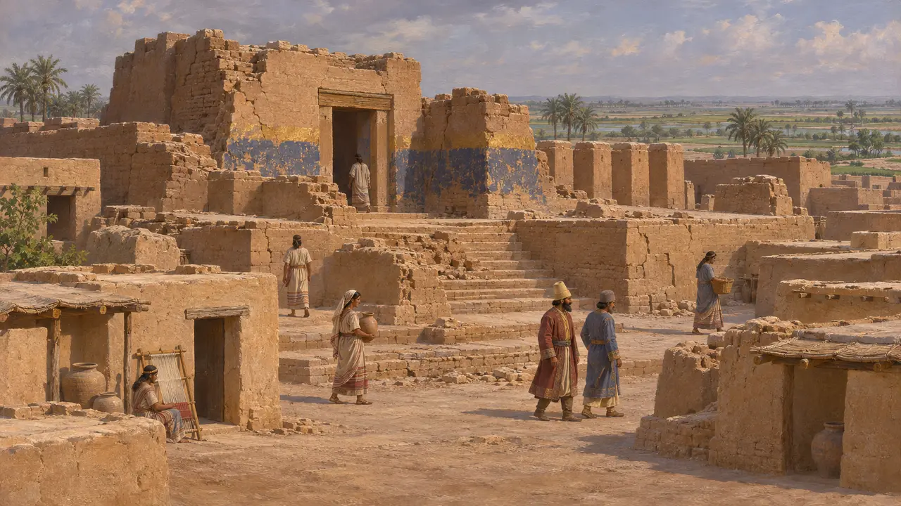
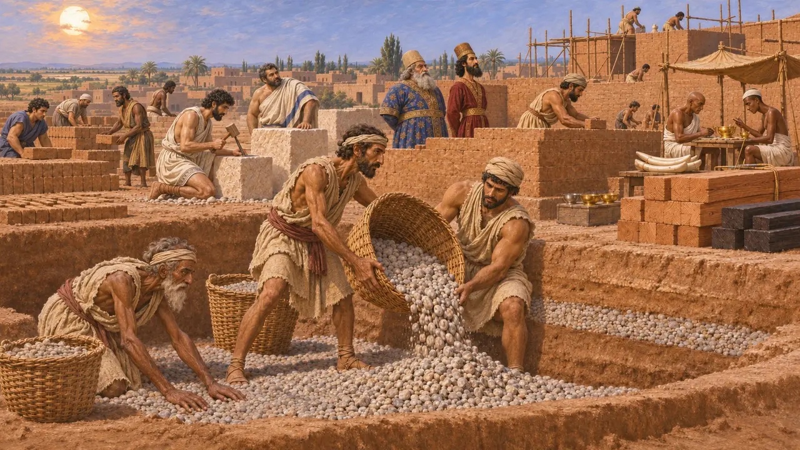
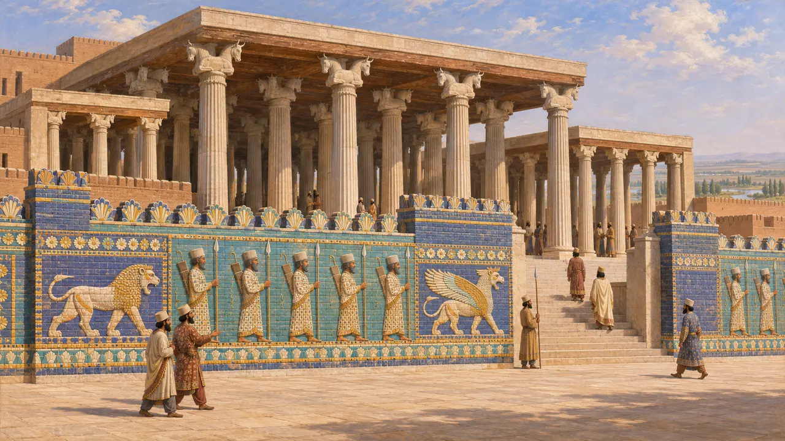
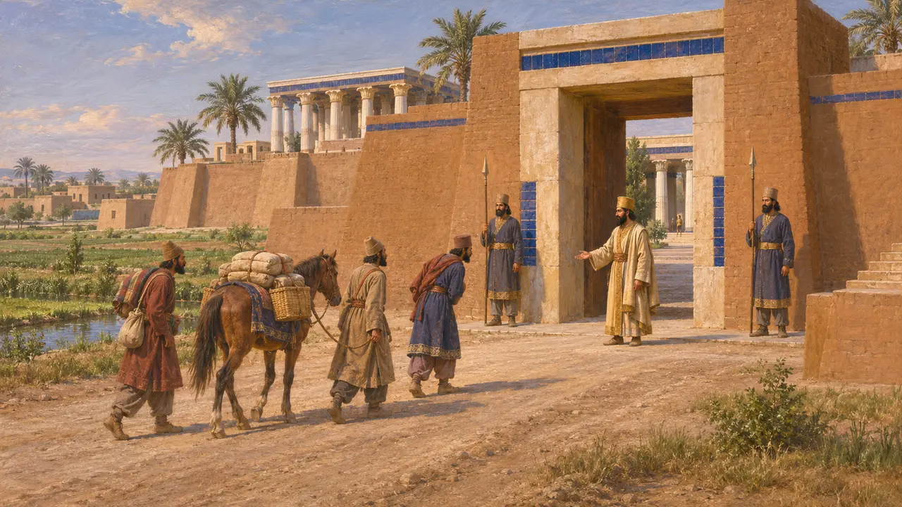
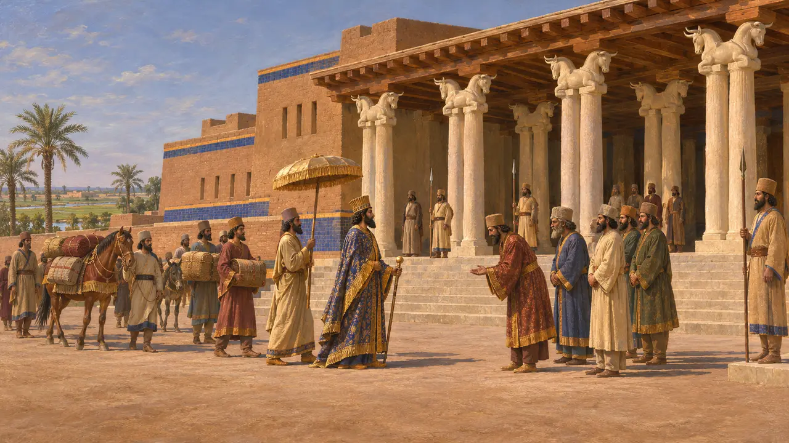

Сузы
Древний эламский город, отстроенный Дарием как царская резиденция, равнинный Элам, примерно с 520 г. до н. э.
В игре: Уровень 5: Хартия, Уровень 6: Наплавной мост, Уровень 7: Сарды в огне, Уровень 8: Марафонская бухта
Сузы стояли на равнине низинного Элама и за тысячи лет до прихода персов были одним из его главных городов. Дарий сделал их царской резиденцией и возвёл здесь дворец и огромный колонный зал из материалов, доставленных со всей державы, руками собранных оттуда же мастеров. Греческие писатели знали Сузы как город Царя, где заканчивалась Царская дорога из Сард.
В игре: Игра представляет Сузы как столицу Элама, где Дарий строит свой дворец и ападану в конце Царской дороги. Сузы были одним из главных городов Элама наряду с Аншаном, а не единственной его столицей, и строительство, вероятно, началось несколько позже 521 года до н. э.

Эламский город доперсидской поры
Свидетельства эпохиРаскопки показывают, что люди жили в Сузах примерно с 4000 года, и на протяжении долгих периодов город был одним из главных в Эламе, деля эту роль с горным Аншаном. Ассирийский царь Ашшурбанипал разорил его около 646 года до н. э. и похвалялся этим разрушением в собственных надписях. Ко времени Кира город, вероятно, был снова заселён, хотя остатков этой эпохи сохранилось немного, а осады при переходе под власть персов источники не отмечают.
D. T. Potts, The Archaeology of Elam, 1999

Хартия основания Дария
Свидетельства эпохиВ своей хартии DSf Дарий говорит, что его строители копали вглубь до твёрдой земли и засыпали котлован гравием, прежде чем возвести дворец. Он перечислил, откуда что доставлено: кедр — из Ливана, золото — из Сард и Бактрии, серебро и эбеновое дерево — из Египта, слоновая кость — из Куша и Индии. Ионийцы и сардийцы тесали камень, мидяне и египтяне обрабатывали золото, а вавилоняне делали кирпичи. Бехистунская надпись сообщает, что Дарий подавил три восстания в Эламе между 522 г. до н. э. и примерно 519 г. до н. э. годами.
DSf; DB

Глазурованный кирпич и ападана
Свидетельства эпохиФранцузские археологи, работавшие здесь с 1880-х годов, открыли дворец и ападану — квадратный зал с тридцатью шестью каменными колоннами и портиками с трёх сторон. Стены были облицованы рельефным глазурованным кирпичом с изображениями стражников с копьями и луками, львов и крылатых существ; многие панно сейчас хранятся в Лувре. Более поздняя надпись сообщает, что зал сгорел при Артаксерксе I и был отстроен заново Артаксерксом II.
J. Perrot (ed.), The Palace of Darius at Susa, 2013

Конец Царской дороги
Античное свидетельствоГеродот описывает дорогу из Сард в Сузы с царскими станциями на всём её протяжении и исчисляет её примерно в 450 парасангов — около трёх месяцев пешего пути. К этому он прибавляет ещё три дня на участок от Эфеса на побережье до Сард. Он же вкладывает в уста Аристагора утверждение, что в Сузах хранятся сокровища Царя.
Herodotus 5.49; Herodotus 5.52-54

Столица или одна из нескольких резиденций
СпорныйГреческие авторы считали Сузы главным городом персидских царей, и Эсхил поместил туда действие своих «Персов». Ксенофонт пишет, что двор переезжал по временам года между Вавилоном, Сузами и Экбатанами. Историки согласны, что Царь переезжал между несколькими резиденциями, включая Персеполь, но спорят, насколько регулярным был этот круг и насколько Сузы превосходили остальные.
Xenophon, Cyropaedia 8.6.22; P. Briant, From Cyrus to Alexander, 2002
Источники
- DSf
- Herodotus 5.52-54
- J. Perrot (ed.), The Palace of Darius at Susa, 2013
- P. Briant, From Cyrus to Alexander, 2002
- D. T. Potts, The Archaeology of Elam, 1999
- DB